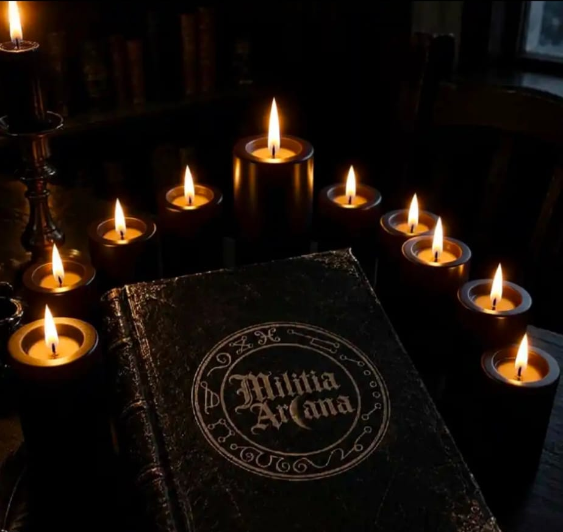

STATUTO DELLA MILITIA ARCANA

Preambolo
La Militia Arcana nasce dall'unione ideale e volontaria di bands italiane appartenenti alla scena Metal, accomunate da una storia, da valori artistici e da una comune sensibilità verso l'occultismo, l'esoterismo, il simbolismo, il mistero, la spiritualità e le tradizioni arcane.
La Militia Arcana intende preservare e valorizzare lo spirito autentico della scena Metal italiana, con particolare attenzione alle realtà nate e sviluppatesi a partire dagli anni Novanta, favorendo la collaborazione tra bands, musicisti e realtà artistiche che condividano tale identità.
La Militia Arcana non costituisce un movimento politico, religioso o ideologico, ma esclusivamente una unione artistica e culturale fondata sul rispetto reciproco, sulla libertà creativa e sul sostegno tra i propri membri.
Articolo 1 – Denominazione
È costituita la Militia Arcana, di seguito denominata semplicemente “Militia Arcana”.
La Militia Arcana riunisce bands italiane appartenenti alla scena Metal che riconoscano e rispettino i principi stabiliti dal presente Statuto.
Articolo 2 – Finalità
La Militia Arcana ha come principali finalità:
- creare una rete stabile di supporto reciproco tra le bands aderenti;
- favorire concerti, festival, tour, eventi e manifestazioni comuni;
- promuovere la collaborazione nella produzione e diffusione di musica, merchandise, artwork e materiale promozionale;
- sostenere le bands nella promozione delle proprie attività;
- favorire lo scambio di contatti, esperienze, competenze e risorse;
- valorizzare la storia del Metal italiano e delle sue realtà più longeve;
- preservare lo spirito underground e indipendente della scena;
- promuovere la cultura dell'occulto, dell'esoterismo, del simbolismo e del mistero quali temi artistici e culturali;
- creare occasioni di collaborazione tra bands appartenenti a generazioni diverse della scena italiana;
- favorire la nascita di iniziative collettive quali compilation, festival, pubblicazioni, documentari, mostre, merchandise e altri progetti artistici.
Articolo 3 – Identità artistica
La Militia Arcana ha come principali finalità:
- creare una rete stabile di supporto reciproco tra le bands aderenti;
- favorire concerti, festival, tour, eventi e manifestazioni comuni;
- promuovere la collaborazione nella produzione e diffusione di musica, merchandise, artwork e materiale promozionale;
- sostenere le bands nella promozione delle proprie attività;
- favorire lo scambio di contatti, esperienze, competenze e risorse;
- valorizzare la storia del Metal italiano e delle sue realtà più longeve;
- preservare lo spirito underground e indipendente della scena;
- promuovere la cultura dell'occulto, dell'esoterismo, del simbolismo e del mistero quali temi artistici e culturali;
- creare occasioni di collaborazione tra bands appartenenti a generazioni diverse della scena italiana;
- favorire la nascita di iniziative collettive quali compilation, festival, pubblicazioni, documentari, mostre, merchandise e altri progetti artistici.
Articolo 3 – Finalità
Le bands aderenti dovranno possedere una produzione artistica nella quale siano presenti, in maniera significativa e riconoscibile, tematiche quali:
- occultismo;
- esoterismo;
- magia e ritualità;
- simbolismo;
- mitologia;
- tradizioni iniziatiche;
- spiritualità e misticismo;
- folklore e tradizioni arcane;
- morte, tenebra e mistero;
- letteratura e filosofia legate alle suddette tematiche.
- La Militia Arcana non impone uno specifico genere Metal né uno specifico orientamento musicale.
Black Metal, Death Metal, Doom Metal, Heavy Metal, Thrash Metal, Gothic Metal, Progressive Metal e ogni altra corrente potranno essere rappresentate, purché la band rispetti i principi fondamentali del presente Statuto.
Articolo 4 – Requisiti di appartenenza
Possono richiedere l'adesione alla Militia Arcana le bands italiane che:
- abbiano una propria identità artistica e musicale;
- presentino una produzione riconducibile al Metal;
- abbiano nei propri testi e/o nella propria immagine artistica una componente significativa legata alle tematiche indicate nell'Articolo 3;
- condividano lo spirito di collaborazione e fratellanza della Militia Arcana;
- rispettino il presente Statuto;
- non utilizzino la propria attività musicale principalmente come strumento di propaganda politica.
Particolare considerazione potrà essere riservata alle bands con una storia consolidata nella scena italiana e con attività iniziata negli anni Novanta o precedentemente, in ragione del valore storico e culturale della loro esperienza.
Articolo 5 – Esclusione della propaganda politica
La Militia Arcana si dichiara estranea a qualsiasi schieramento politico.
Non possono appartenere alla Militia Arcana bands che utilizzino sistematicamente musica, testi, artwork, merchandising, concerti o altri materiali ufficiali della band per:
- celebrare o promuovere il fascismo;
- celebrare o promuovere il comunismo;
- promuovere movimenti, partiti o organizzazioni politiche attraverso l'attività artistica della band;
- utilizzare simboli politici come elemento centrale della propria identità artistica con finalità propagandistiche.
- La semplice presenza occasionale di riferimenti storici, culturali, letterari o artistici a tali fenomeni costituisce automaticamente motivo di esclusione.
La Militia Arcana non giudica le convinzioni politiche personali dei singoli musicisti, purché esse non siano utilizzate per trasformare la Militia Arcana o l'attività ufficiale della band in uno strumento di propaganda.
Articolo 6 – Principio di fratellanza
Ogni band aderente riconosce le altre bands come parte di una comunità artistica comune.
I membri si impegnano, nei limiti delle proprie possibilità, a:
- sostenere le altre bands;
- condividere informazioni e opportunità;
- favorire la partecipazione reciproca a concerti ed eventi;
- promuovere le uscite discografiche delle bands aderenti;
- evitare comportamenti deliberatamente lesivi dell'immagine o dell'attività degli altri membri;
- mantenere un rapporto basato su rispetto, lealtà e correttezza.
La Militia Arcana non impone obblighi economici o professionali tra le bands, salvo quelli eventualmente concordati per specifici progetti.
Articolo 7 – Libertà artistica
La Militia Arcana riconosce la piena libertà creativa dei propri membri.
Ogni band conserva la propria identità, il proprio stile musicale, la propria estetica, il proprio linguaggio e le proprie tematiche.
L'appartenenza alla Militia Arcana non comporta alcuna uniformità artistica.
La diversità musicale è considerata una ricchezza, mentre la comune appartenenza alla scena costituisce il vincolo di unione.
Articolo 8 – Ammissione di nuovi membri
La richiesta di adesione dovrà essere presentata dalla band attraverso un proprio rappresentante.
La richiesta sarà valutata dagli organi della Militia Arcana sulla base:
- della storia della band;
- della produzione musicale;
- dei testi;
- dell'artwork e dell'immagine ufficiale;
- della coerenza con i principi del presente Statuto.
L'ammissione richiede l'approvazione della maggioranza dei membri aventi diritto al voto, secondo le procedure stabilite dal regolamento interno.
Articolo 9 – Organi della Militia Arcana
Sono organi della Militia Arcana:
- L'Assemblea delle Bands;
- Il Consiglio della Militia Arcana;
- Il Coordinatore della Militia Arcana.
- L'Assemblea rappresenta l'organo sovrano della Militia Arcana.
- Il Consiglio coordina le attività comuni.
Il Coordinatore rappresenta la Militia Arcana nei rapporti esterni e cura l'attuazione delle decisioni dell'Assemblea.
Articolo 10 – Assemblea
Ogni band aderente dispone di un voto, indipendentemente dalla propria notorietà, dal numero di componenti o dalla propria anzianità.
L'Assemblea decide sulle questioni fondamentali della Militia Arcana, tra cui:
- ammissione di nuovi membri;
- esclusione dei membri;
- modifica dello Statuto;
- organizzazione di iniziative comuni;
- utilizzo del nome e del simbolo della Militia Arcana;
- eventuali collaborazioni con soggetti esterni.
Articolo 11 – Comportamento dei membri
È richiesto a tutti gli aderenti un comportamento rispettoso nei confronti delle altre bands.
- Costituiscono motivo di richiamo o, nei casi più gravi, di esclusione:
- violazioni dello Statuto;
- comportamenti gravemente lesivi della Militia Arcana;
- utilizzo del nome della Militia Arcana per finalità personali o politiche non autorizzate;
- propaganda politica incompatibile con l'Articolo 5;
- comportamenti discriminatori o violenti nei confronti degli altri membri;
dichiarazioni o iniziative ufficiali che compromettano gravemente l'identità della Militia Arcana.
Ogni provvedimento di esclusione dovrà essere deliberato dall'Assemblea, garantendo alla band interessata la possibilità di esporre le proprie ragioni.
Articolo 12 – Simbolo e immagine comune
La Militia Arcana potrà dotarsi di un simbolo ufficiale, utilizzabile dalle bands aderenti secondo le modalità stabilite dall'Assemblea.
Il simbolo potrà essere utilizzato su:
- merchandise;
- manifesti;
- compilation;
- eventi;
- pubblicazioni;
- siti internet e social network;
- materiale promozionale.
L'utilizzo del simbolo costituisce riconoscimento di appartenenza alla Militia Arcana e dovrà rispettarne l'immagine e i principi.
Articolo 13 – Attività comuni
La Militia Arcana potrà organizzare e promuovere:
- festival e concerti;
- tour collettivi;
- compilation;
- split album;
- produzioni editoriali;
- merchandise comune;
- mostre e iniziative artistiche;
- incontri culturali;
- documentari e produzioni audiovisive;
- archivi e raccolte sulla storia del Metal italiano;
- iniziative di sostegno alle bands in difficoltà.
Le eventuali entrate derivanti da attività comuni saranno gestite secondo criteri di trasparenza stabiliti dall'Assemblea.
Articolo 14 – Indipendenza
La Militia Arcana mantiene la propria indipendenza da:
- partiti politici;
- movimenti politici;
- organizzazioni politiche;
- confessioni religiose;
- aziende o soggetti commerciali che intendano condizionarne l'identità artistica.
Eventuali collaborazioni esterne saranno valutate caso per caso dall'Assemblea.
Articolo 15 – Spirito della Militia Arcana
L'appartenenza alla Militia Arcana non rappresenta un semplice marchio di appartenenza, ma un patto di mutuo sostegno.
Ogni band aderente riconosce che la sopravvivenza e la crescita della scena Metal dipendono anche dalla capacità delle sue realtà di collaborare, sostenersi e tramandare la propria storia.
Una band può cadere. Una scena può resistere. Una milizia arcana può tramandare ciò che è stato costruito.
Articolo 16 – Modifiche dello Statuto
Il presente Statuto può essere modificato dall'Assemblea con una maggioranza qualificata dei membri stabilita dal regolamento interno.
Le modifiche dovranno comunque preservare i principi fondamentali di:
- indipendenza;
- libertà artistica;
- collaborazione;
- rispetto reciproco;
- estraneità alla propaganda politica;
- valorizzazione dell'identità esoterica e occultistica della Militia Arcana.
Articolo 17 – Scioglimento
Lo scioglimento della Militia Arcana può essere deliberato dall'Assemblea con la maggioranza qualificata dei membri.
In caso di scioglimento, l'eventuale patrimonio comune sarà destinato secondo quanto deliberato dall'Assemblea e nel rispetto della normativa applicabile.
DICHIARAZIONE FINALE
Noi, bands aderenti alla Militia Arcana, riconosciamo nella musica, nell'arte, nel mistero e nella libertà creativa il terreno comune sul quale costruire una comunità.
- Non siamo un partito.
- Non siamo una corrente politica.
- Non siamo una religione.
- Siamo bands.
- Siamo parte della storia del Metal italiano.
- E attraverso la nostra musica, la nostra arte e la nostra fratellanza intendiamo preservare e tramandare ciò che ci unisce.